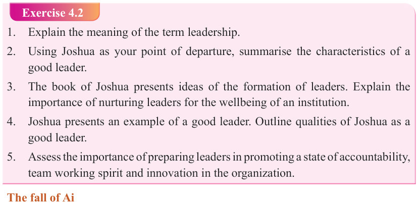
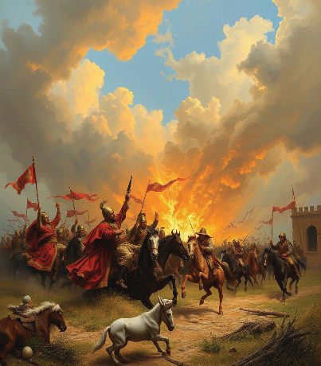

Form Two
Tanzania Institute of Education (TIE)


Bible Knowledge
57


Figure 4.2: The Israelites capture the city of Jericho
Exercise 4.2
1. Explain the meaning of the term leadership.
2. Using Joshua as your point of departure, summarise the characteristics of a good leader.
3. The book of Joshua presents ideas of the formation of leaders. Explain the

importance of nurturing leaders for the wellbeing of an institution.
4. Joshua presents an example of a good leader. Outline qualities of Joshua as a
good leader.
5. Assess the importance of preparing leaders in promoting a state of accountability,

team working spirit and innovation in the organization.
The fall of Ai
The tiny city of Ai (Beth-Aven) was located near Bethel, east of the ancient city of
Jericho. Its biblical significance is seen when the Israelites, after their victory over
Jericho, suffered a defeat against Ai due to disobedience to God, as described in
Joshua chapter 7. The victory over Jericho stood in contrast to the defeat at Ai, in central Canaan.